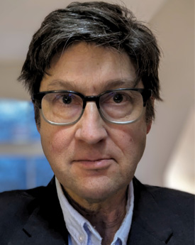

Our Team
We combine the experience of 300 consulting projects in futures and foresight with the expertise of those running quantum companies and leading the academic research.
Founders
Full bio
Cambridge-trained scientist and engineer. Founded an AI cybersecurity company at the UK's first GCHQ/NCSC accelerator, and later helped deliver the Northern Ireland Quantum Foresight project for Matrix and the Department for the Economy, and a government-commissioned assessment of the criminal misuse of quantum technologies. He holds an MA and MSci in Natural Sciences and an MPhil in Industrial Systems, Manufacture and Management, all from the University of Cambridge, Magdalene College.
Full bio
Director and Fellow of SAMI Consulting, one of the UK's longest-running futures and foresight practices. Working in strategic foresight since 2000, he is currently leading the refresh of the UK Government Office for Science's Futures Toolkit. His government and international work spans the implications of the UK's departure from the EU, specialist coverage of Russia, Central Asia and the Middle East, and a project for the European Commission's Research and Innovation Directorate. He holds an MPhil from St Catharine's College, Cambridge.

Full bio
Matt worked for the UK Government for 20 years, latterly as a Head of Strategy, Risk and Futures. He was then a Director at management consulting firm Baringa Partners, and is now a Principal at SAMI Consulting. In the academic sphere, he was a Fellow at the University of Cambridge's Centre for Science and Policy and is currently a Research Fellow at the University of Reading, where he is Principal Investigator for a project on the potential relationships between natural and artificial intelligences in future organisations.
Our experts
The project team working on your engagement includes senior quantum academics and successful quantum entrepreneurs: advice grounded in scientific and commercial realism.
Full bio
Meera is Founder and CEO of Cystel, a company focusing on preparing businesses for quantum challenges and future AI threats. Cystel's services include quantum risk assessments, training, workshops, transformation, and policy development, alongside consulting on various security standards and compliance frameworks. She is a member of the All Party Parliamentary Group on Cyber Security and a subject matter expert in cyber security, AI, and quantum for both the UK Parliamentary Office of Science and Technology and the European Commission.
Full bio
Josh is a quantum physicist and the Founder and Chief Science Officer at Orca Computing, which specialises in photonic quantum computing. He previously held academic positions at the Universities of Oxford and Bath, with visiting lectureships at Warwick and Imperial. As well as holding several quantum patents, Josh has published 46 peer reviewed articles, been an editor and reviewer for many leading quantum journals, and has chaired conferences on subjects including quantum information, optics, and communications.
Full bio
Nicky is the Head of Solutions Development team within Engage, the outreach team of the University of Cambridge Institute for Manufacturing. A strategy and technology management specialist, she works with business and innovation leaders across the high-value manufacturing community, universities, and government. Before IfM, Nicky was a project manager in technology start-ups where she initiated, implemented, and managed many international projects to enable the commercialisation of new technologies into different markets.

Full bio
Bill is Professor in Practice for Data and Cyber at the University of Lancaster and a Visiting Researcher at both the Alan Turing Institute and the Heilbronn Institute for Mathematical Research. He spent the majority of his career working for the UK Government where he was at the forefront of the challenges and opportunities presented by new technologies, including quantum.
Full bio
Ciara is a Senior Lecturer at the Centre for Secure Information Technologies at Queen's University Belfast, with a focus on applied cryptography, privacy enhancing technologies, and optimised hardware architectures of cryptographic primitives. She is Co-Investigator of the EPSRC Integrated Quantum Communications Hub in the UK (IQN Hub), with the aim to deliver scalable quantum-enabled networks. She was co-Investigator of the UK Quantum Communications Hub in the UK, working towards hybrid and post-quantum cryptography (PQC) solutions.
Full bio
Jake is a former police investigator with 14 years' experience in digital forensics and cybercrime investigations. He is now a global cybersecurity advisor, researcher, and media commentator at ESET, specialising in cybercrime, AI driven threats, and emerging technology risks, including quantum. He advises partners and stakeholders on strategy and best practice, delivers tailored workshops and hands-on training, and carries out in-depth research into future technology-enabled crime.
Full bio
Tom is a member of the Centre for Economic Performance at the LSE, and sits on the Home Office Scientific Advisory Council. His expertise spans economics, productivity, and making optimal use of large organisational datasets and AI-based applications, especially where these relate to policing and crime. His contribution here is the economic and organisational implications of quantum-era technologies, rather than the physics.